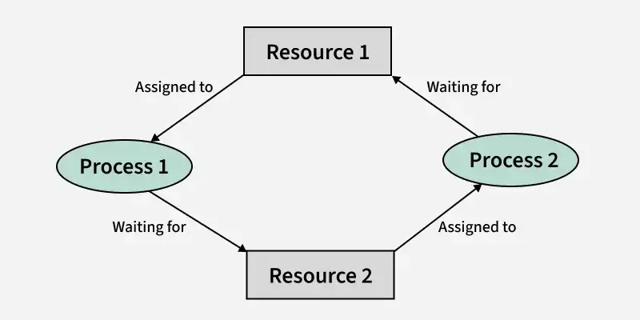
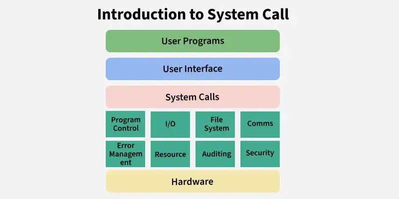
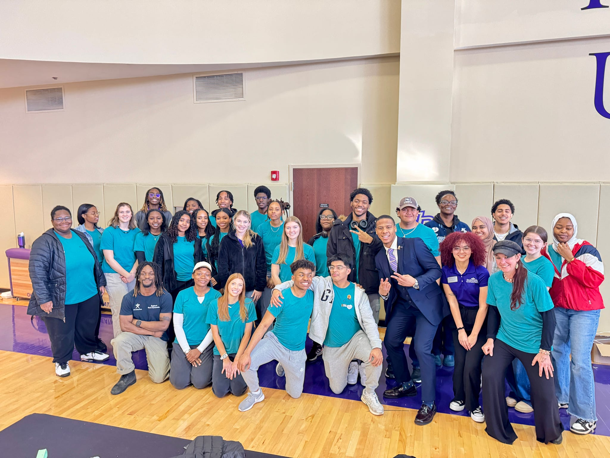

Projects
Project One

Resource Allocation Graph
After completing this project I was be able to, explain and simulate OS process states using PCBs, distinguish time-based vs. event-based preemption, track process execution at each discrete time unit, implement a realistic OS-style scheduling trace, and debug scheduling behavior using PCB snapshots.
View on GitHub
Project Two

Process Thread
This project explores the concepts of process creation and multithreading in operating systems using system calls and thread libraries in C. This helped me understand how processes and threads execute, how they are scheduled by the operating system, and how their outputs can vary depending on synchronization and timing.
View on Github
Project Three

In this project I helped plan and put together a project to pack hundreds of seeds to help combat food insecurity in our community and help grow fresh, nutritious food for those in need.
View Source / Instagram